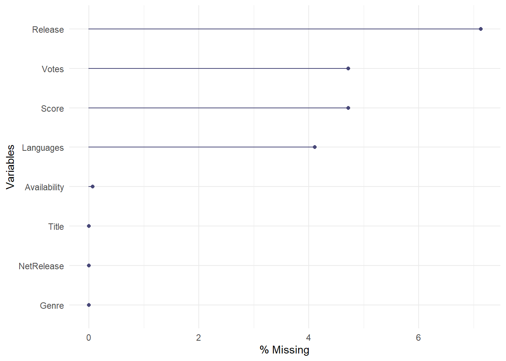
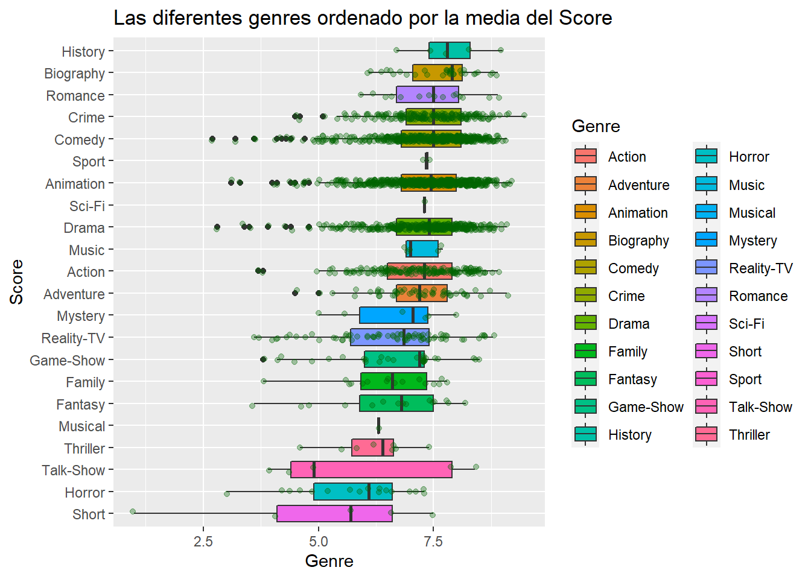

Exploración de las series más populares de Netflix
Autor/a
Lena Baerwinkel
Fecha de publicación
13 de enero de 2023
Introducción
A mí me gustan mucho las series de Netflix. Pero hay muchísimas series, y la disponibilidad de las series de Netflix es diferente en cada país. Por esto decidí eplorar unos datos sobre las series de Netflix.
Cargar y editar los datos
Primero, hay que cargar los datos. Ya están descargados, por eso sólo les cargo en la memoria. También voy a cambiar los nombres de las columnas para hacer la análisis un poco más fácil y borrar las películas del dataset. Tampoco me interesan las que son únicamente documentales. Además, quiro solo ver el primer genre.
Antes de hacer el análisis, echaré un vistazo al dataset.
# A tibble: 5 x 8
Title Genre Langu~1 Avail~2 Score Votes Release NetRe~3
<chr> <chr> <chr> <chr> <dbl> <dbl> <chr> <chr>
1 Lets Fight Ghost Crime Swedis~ Thaila~ 7.9 205926 12-Dec~ 04/03/~
2 ANNE+ Drama Turkish Belgiu~ 6.5 1147 01-Oct~ 04/03/~
3 Gleboka woda Drama Polish Poland 7.5 47 14-Jun~ 03/03/~
4 Instynkt Crime Polish Poland 3.9 107 03-Mar~ 03/03/~
5 Girls und Panzer das Finale Anim~ Japane~ Japan 7.3 210 09-Dec~ 02/03/~
# ... with abbreviated variable names 1: Languages, 2: Availability,
# 3: NetRelease
Veo que Release y NetRelease no son fechas pero characters. Al momento no me molesta, lo puedo cambiar más tarde.
Quiero ver cuántos NA hay en cada variable. Si en una variable hay muchos NAs, puede interferiri con los resultados del análisis.
naniar::gg_miss_var(data, show_pct =TRUE)

Como el score y los votos son importante para mi análisis, no usaré las filas en las cuales hay un NA en estos dos variables.
data <- data %>% tidyr::drop_na(c(Votes, Score))
Cómo unos series tienen muy pocas votes, les voy a eliminar del dataset.
data %>%summary()
Title Genre Languages Availability
Length:2807 Length:2807 Length:2807 Length:2807
Class :character Class :character Class :character Class :character
Mode :character Mode :character Mode :character Mode :character
Score Votes Release NetRelease
Min. :1.000 Min. : 5.0 Length:2807 Length:2807
1st Qu.:6.500 1st Qu.: 212.5 Class :character Class :character
Median :7.200 Median : 1142.0 Mode :character Mode :character
Mean :7.085 Mean : 19570.5
3rd Qu.:7.900 3rd Qu.: 6020.0
Max. :9.500 Max. :1469976.0
El 1st Qu, es 211, así eliminaré los series que tienen menos votes que este número.
data <- data %>%filter(Votes >=211)
Qué son las series más populares?
Ahore me interesa qué son las series más populares/ con el mejor rating.
a <- data %>%arrange(desc(Score))%>%slice(1:30) %>%select(Title, Genre, Score)table <- a %>%gt()table <- table %>%tab_header(title =md("**Las 30 Series mas populares**"), subtitle =md("Segun su score en *IMbd*")) table
Las 30 Series mas populares
Segun su score en IMbd
Title
Genre
Score
Breaking Bad
Crime
9.5
Rick and Morty
Animation
9.2
Avatar: The Last Airbender
Animation
9.2
The World Between Us
Crime
9.1
My Mister
Drama
9.1
Irmão do Jorel
Animation
9.1
Reply 1988
Comedy
9.1
Leyla and Mecnun
Adventure
9.1
Fullmetal Alchemist: Brotherhood
Animation
9.1
Sherlock
Crime
9.1
Running Man
Comedy
9.0
Humsafar
Drama
9.0
Raja Rasoi Aur Anya Kahaniyan
History
9.0
The Twilight Zone (Original Series)
Drama
9.0
Death Note
Animation
9.0
The Untamed
Action
8.9
College Romance
Comedy
8.9
When They See Us
Biography
8.9
Innocent
Comedy
8.9
Hey Duggee
Animation
8.9
Zindagi Gulzar Hai
Romance
8.9
Cowboy Bebop
Animation
8.9
Only Fools and Horses
Comedy
8.9
Attack on Titan
Animation
8.9
Fargo
Crime
8.9
The Office (U.S.)
Comedy
8.9
Friends
Comedy
8.9
Hunter X Hunter (2011)
Animation
8.9
VINLAND SAGA
Animation
8.8
Vientos de agua
Drama
8.8
No conozco muchos de estas series, que raro.
Qué son las genres más populares?
ggplot(data, aes(x=reorder(Genre,Score, mean),y=Score))+geom_boxplot(aes(fill=Genre))+coord_flip()+geom_jitter(width=0.15, alpha =1/3, color ="darkgreen")+labs(title="Las diferentes genres ordenado por la media del Score", x="Score", y="Genre")

Hay algunas series que tienen mas series que son mal que bueno?
Ahora divido las series entre Good y Bad, dependiente de si su Score es mejor que un 7.5.
data$Rating <-ifelse(data$Score>=7.5, "Good", "Bad")a <- data %>%group_by(Genre, Rating)%>%summarize(NN =n())a <-pivot_wider(a, names_from = Rating, values_from = NN, values_fill =0)a <- a %>%mutate(Net = Good-Bad)table <- a %>%gt()table <- table %>%tab_header(title =md("**Hay categorias con mas Bad series que Good?**"), subtitle =md("Parece que *si*")) table
Hay categorias con mas Bad series que Good?
Parece que si
Bad
Good
Net
Action
99
77
-22
Adventure
31
22
-9
Animation
298
298
0
Biography
11
21
10
Comedy
216
265
49
Crime
96
98
2
Drama
194
177
-17
Family
12
4
-8
Fantasy
10
5
-5
Game-Show
25
5
-20
History
2
3
1
Horror
17
0
-17
Music
3
2
-1
Musical
1
0
-1
Mystery
5
1
-4
Reality-TV
57
17
-40
Romance
7
8
1
Sci-Fi
1
0
-1
Short
4
1
-3
Sport
2
0
-2
Talk-Show
3
2
-1
Thriller
8
0
-8
Parece que en algunas categorás hay más “Bad” series que “Good”.
g <- data %>%arrange(desc(Score))%>%slice(1:500)%>%group_by(Genre)%>%summarize(number =n())g <- g %>%mutate(percent = number/500*100)b <- data %>%arrange(desc(Score)) %>%slice(500:nrow(data))%>%group_by(Genre)%>%summarize(number =n())b <- b %>%mutate(percent = number/500*100)
a <- data %>%group_by(Genre)%>%summarize(number =n())p <-plot_ly(a, labels =~Genre, values =~number, type ='pie',textposition ='outside',textinfo ='label+percent') %>%layout(title ='Letters',xaxis =list(showgrid =FALSE, zeroline =FALSE, showticklabels =FALSE),yaxis =list(showgrid =FALSE, zeroline =FALSE, showticklabels =FALSE))p